모든 관절로 포즈
손발을 끌기만 하면 IK(역운동학)가 팔꿈치와 무릎을 알아서 굽힙니다. 각도 고정, 늘어나는 노드, 3D 파츠도 지원합니다.

포즈를 잡고, 키프레임을 찍고, 그리고, 내보내세요.
Stick은 Windows, Linux, 브라우저에서 쓰는 무료 오픈소스 스틱맨 애니메이션 프로그램입니다.
졸라맨 싸움, 걷기 사이클, 밈, 단편 애니메이션을 만들고 MP4, GIF, PNG로 내보내세요.
Stick은 졸라맨(스틱맨) 애니메이션을 위한 데스크톱·웹 앱입니다. 관절을 끌어 포즈를 잡고, 프레임을 추가해 다시 포즈를 바꾸면 그 사이 동작을 Stick이 자동으로 채워 줍니다. 레이어 타임라인, 어니언 스킨, 카메라 무빙, 시각 효과, 손그림 브러시, 나만의 캐릭터를 위한 리그 빌더를 갖추고 있습니다.
Pivot Animator(.piv, .stk)와 Stick Nodes 프로젝트도 열 수 있어 예전 작업을 그대로 이어갈 수 있습니다. 모든 작업은 내 컴퓨터에서 처리됩니다. 계정, 워터마크, 업로드가 없습니다.
손발을 끌기만 하면 IK(역운동학)가 팔꿈치와 무릎을 알아서 굽힙니다. 각도 고정, 늘어나는 노드, 3D 파츠도 지원합니다.
프레임을 추가하고 포즈를 바꾼 뒤 재생하세요. 트윈, 이징 곡선, 실시간 WebGPU 재생으로 긴 애니메이션도 부드럽습니다.
간단한 프레임 스트립 또는 레이어, 폴더, 키, 이징, 재생 범위, 어니언 스킨, 오디오 트랙이 있는 고급 타임라인.
글로우, 오라, 그림자, 블러, 파티클, 에너지 빔, 폭발, 연기, 파워업을 프레임별로 키 설정할 수 있습니다.
잉크, 붓펜, 연필, 라이너, 마커, 목탄, 에어브러시, 분필, 유화 등. 손그림과 리그를 자유롭게 섞으세요.
선, 원, 다각형, 텍스트, 이미지로 캐릭터를 만드세요. 톱니바퀴, 부채, 상자, 3D 도형 예제로 시작할 수 있습니다.
F1 또는 Ctrl+P로 어떤 명령이든 찾으세요. 모든 단축키를 바꿀 수 있습니다.
기본은 다크 테마, 원하면 라이트 테마. UI 크기 조절과 태블릿용 터치 레이아웃을 지원합니다.
YouTube, YouTube Shorts, TikTok, Instagram 릴스, X, 채팅용 GIF, 투명 PNG 프레임, 4K 원클릭 프리셋. MP4, WebM(투명 지원), GIF, APNG, PNG / JPEG / SVG 시퀀스와 편집 가능한 .piv, .stk 파일로 내보낼 수 있습니다.
⭐ 이 저장소에 Star를 눌러 새 릴리스를 받아 보고, 더 많은 애니메이터가 Stick을 찾을 수 있게 도와주세요.
네. GPL-3.0 라이선스의 무료 오픈소스입니다. 계정, 워터마크, 유료 버전이 없습니다.
네. Pivot Animator 프로젝트(.piv)와 피규어(.stk)를 열고 다시 내보낼 수 있으며, 레이어 타임라인, 트윈, 효과, 손그림, WebGPU 렌더링이 추가되어 있습니다.
네. Stick Nodes 피규어, 무비클립, 프로젝트를 가져와 Windows나 Linux 컴퓨터에서 계속 작업할 수 있습니다.
관절을 끌어 포즈를 잡고 프레임 추가(A)를 누른 뒤 포즈를 바꾸고 스페이스로 재생하세요. 프레임 사이 동작은 Stick이 채웁니다. 마지막으로 내보내기에서 MP4, GIF, TikTok 같은 프리셋을 고르세요.
완전히 오프라인으로 작동합니다. 프로젝트는 내 컴퓨터에만 저장되고 업로드되지 않습니다.
필요 환경: Node.js 22 이상, Python 3.11 이상.
git clone https://github.com/blixvip/stick.git
cd stick
npm ci
python -m pip install -r backend/requirements-fast.txt
npm start # 데스크톱 앱(Electron)
npm run serve # 또는 브라우저에서 편집기 열기: http://127.0.0.1:47831Stick은 GNU 일반 공중 사용 허가서 v3.0(또는 이후 버전)에 따른 자유 소프트웨어입니다. GPL 라이선스인 StykAnimate 프로젝트를 수정한 버전이며, 라이선스에 따라 이 고지를 유지합니다. Stick은 독립 프로젝트이며 Pivot Animator나 Stick Nodes와 제휴하지 않았습니다. 해당 이름은 파일 호환성을 설명하기 위해서만 사용합니다.